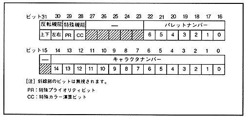

- Character number 15 bits
- Pallet number 7 bits
- Special function bit 2 bits
- Inversion function bit 2 bits
Table 4.5 Character number assist mode
Character number | Processing |
0 | The character number that can be specified for pattern name data is 10 bits. |
1 | The character number that can be specified for pattern name data is 12 bits. |
Figure 4.9 Bit structure when pattern name data is 2 words
